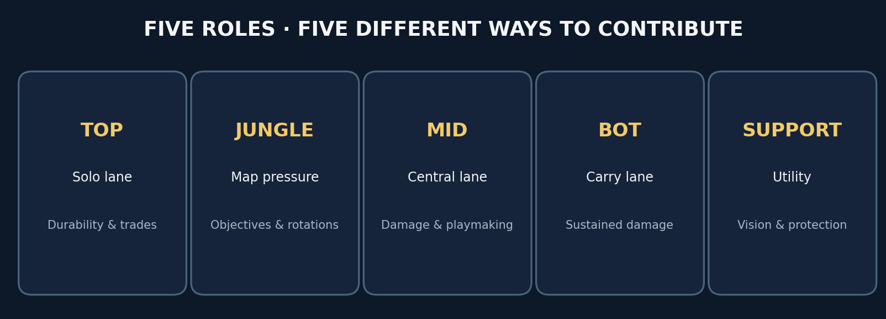
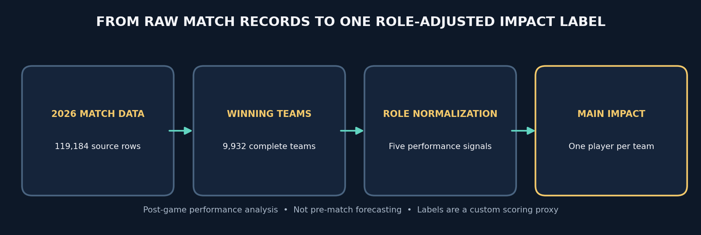
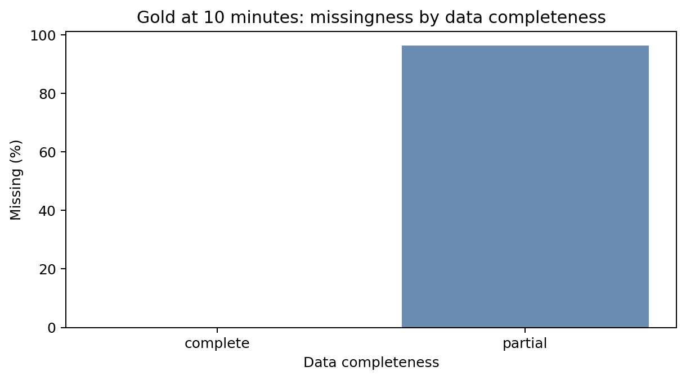
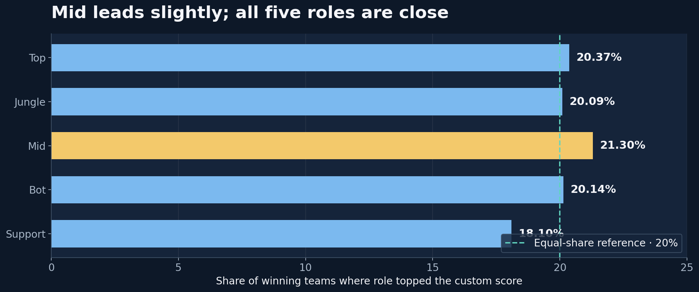
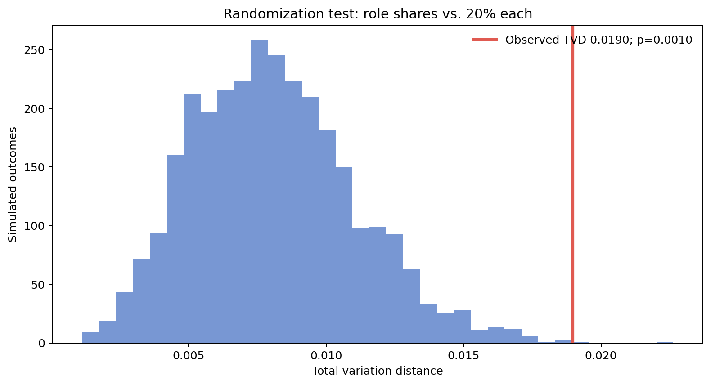
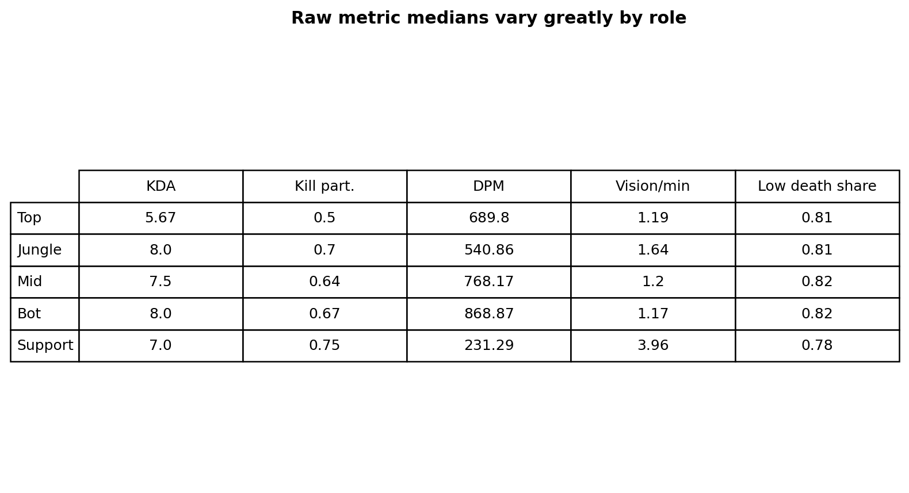
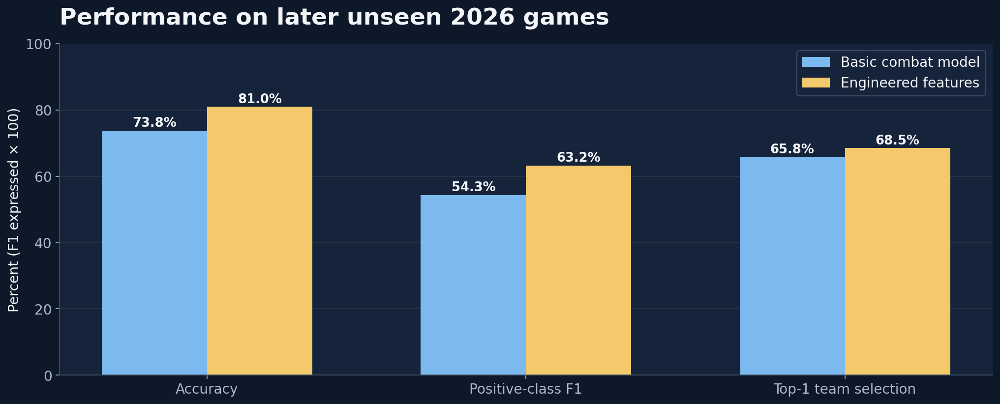
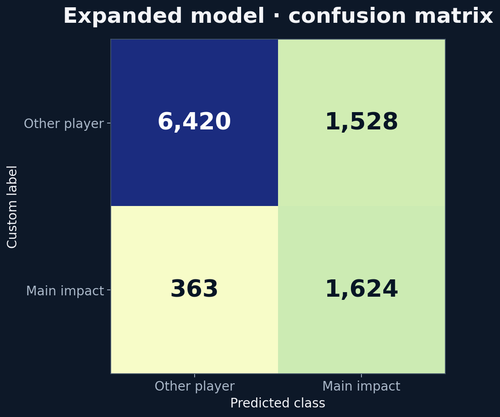

What does it mean to “carry” a game?
League of Legends is a 5 vs. 5 game. Each player fills one role—top, jungle, mid, bot, or support—and contributes to a win differently. But can we compare their impact fairly?
Research question: Among winning professional League of Legends teams, which role most often has the highest impact, after accounting for the different jobs of each role?
I use “main impact player” instead of just “carry.” A bot laner may stand out through damage, while a support may excel through assists and vision. The goal is to compare players to others who do the same job, not reward damage alone.

From match records to a role-adjusted score
The source is the 2026 Oracle's Elixir professional match extract, covering January 1–November 15, 2026. Each game can have ten player records (five per side) and two team-summary records. I excluded team-summary rows and kept complete five-player winning teams.

Five impact signals
- KDA: kills and assists relative to deaths
- Kill participation: share of the team's kills a player helped secure
- Damage per minute: offensive output adjusted for game length
- Vision per minute: contribution to revealing the map
- Low death share: avoiding a disproportionate share of team deaths
Why within-role percentiles?
Instead of comparing a support's raw damage to a bot laner's damage, I rank each player against other players in the same role for every metric.
On each winning five-player team, the player with the highest composite score receives main_impact = 1; the other four receive 0.
Missing data matters
The source has incomplete timeline fields for some games. I checked how missingness varied with match-data completeness rather than assuming that all values were available. Missingness can affect which player contributions are measurable.

Which role earned the main-impact label most often?
Mid ranked first at 21.30% of winning teams, followed closely by top, bot, and jungle. Support was lowest at 18.10%. The differences are small in magnitude, even when statistically detectable.

Are the role shares exactly equal?
I used a randomization test with Total Variation Distance (TVD) to compare the observed distribution with an idealized 20% per role.
0.0190
A small overall departure from an equal 20/20/20/20/20 split.
0.0010
Under the simulated equal-role null, a departure this large was unusual.

How do the raw metrics differ across roles?

Can a model identify the top-scoring player?
A binary logistic regression model predicts whether a player's completed-game performance matches the custom main-impact label. Every winning team contributes one positive example and four negative examples, so only 20% of players have the positive label.
Basic combat model
Uses position and simpler game statistics such as kills, deaths, assists, and team combat context.
BaselineExpanded model
Adds more engineered context to represent player contributions. Hyperparameter tuning is performed within earlier games, and evaluation is performed on later unseen games.
Engineered featuresMatches were split chronologically by game, keeping players from the same match together. Training used earlier games (January–August 2026); the held-out test covered later games (August–November 2026).

Held-out model results
| Model | Accuracy | F1 (impact class) | Precision | Recall | Top-1 / team |
|---|---|---|---|---|---|
| Basic combat | 73.8% | 0.543 | 0.417 | 0.779 | 65.8% |
| Expanded | 81.0% | 0.632 | 0.515 | 0.817 | 68.5% |
What is F1?
F1 balances precision (how often predicted impact players were truly labeled as such) and recall (how many labeled impact players the model found). It is useful when only one of five players has the positive label.
What is top-1?
For each five-player team, rank the model's predicted probabilities and select its highest-scoring player. The expanded model matched the custom label for 68.5% of held-out teams.

What these results do—and do not—show
What this project demonstrates
- A reproducible player-level data cleaning pipeline
- Within-role feature engineering and an interpretable impact score
- A randomization test for role-balance differences
- Chronological, grouped evaluation of two classification models
- Clear communication of model trade-offs with charts and a confusion matrix
Limitations worth stating
- The “main-impact” label is constructed from match statistics; it is not an external ground truth.
- Classifying post-game statistics is not predicting future match winners.
- Role normalization and chosen feature weights influence the outcome.
- Repeated players/teams and missing timeline values complicate uncertainty estimates.
- Correlation and classification do not prove causal contribution to a win.
Reproducibility and project files
The analysis is implemented in Python using pandas, NumPy, SciPy, scikit-learn, and Matplotlib. The source CSV is the 2026 Oracle's Elixir extract. To reproduce figures and evaluation, run the project script from the repository with the CSV in the same folder.
python DSC80_LoL_Esports_Impact_2026.py --csv 2026_LoL_esports_match_data_from_OraclesElixir.csv